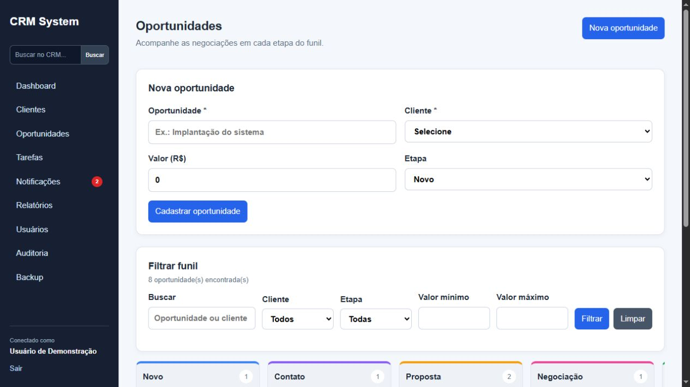

SISTEMA WEB · PYTHONVer projeto no GitHub
CRM System
Um sistema para centralizar clientes, oportunidades e tarefas, com indicadores que ajudam a acompanhar a operação comercial.
O desafio
Informações espalhadas dificultam o acompanhamento de contatos, negociações e próximos passos.
A solução
Um painel integrado com cadastro de clientes, funil Kanban, histórico de atendimentos e relatórios exportáveis.

Capturas do projeto com dados fictícios de demonstração. Clique nas imagens para ampliar.